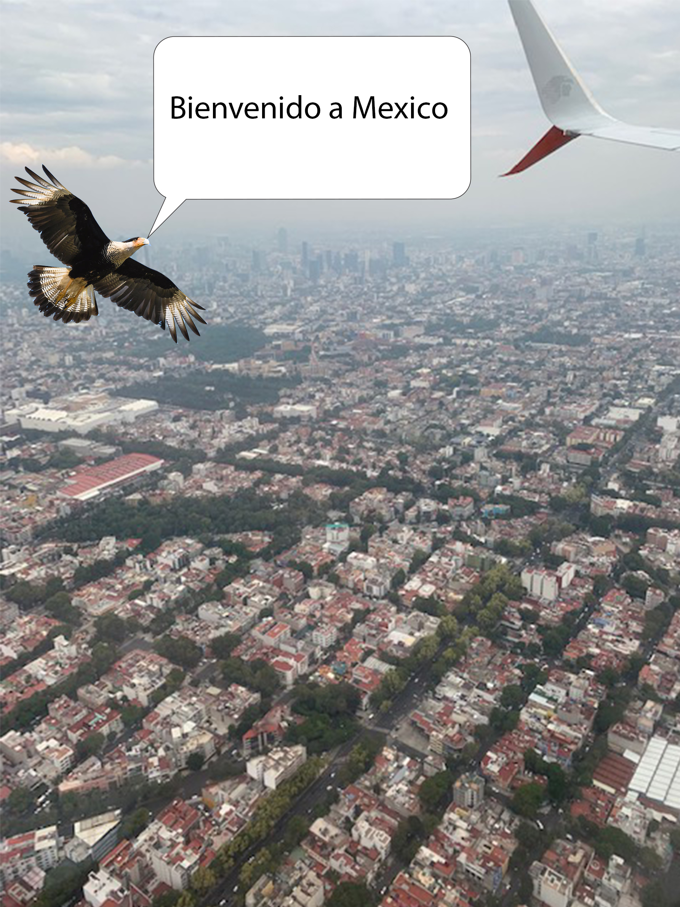
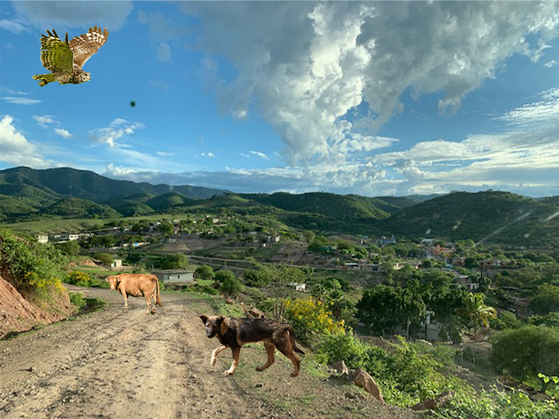

After leaving JFK International Airport for almost six hours, I can see the capital city of Mexico. While it was cloudy to begin with, It still look gorgeous.
After leaving the International Airport of Mexico City, Me along with my mother and the rest of the family were heading to our families village in Tulcingo. After another five hours in a van, we arived at my mother home in Tulcingo,Mexico. As we arived at my families village, we came across some animals that were etheir blocking the road or were just passing by.
